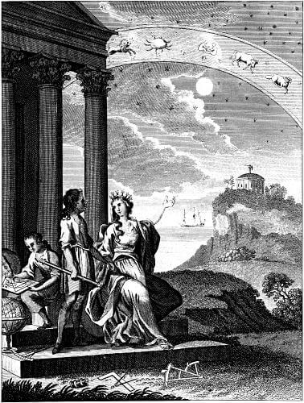

What is Astrology?
Astrology is the observation of the interplay between the planets and our Earth. (Astrologers call the Sun and the Moon planets for the sake of convenience, although they are actually luminaries. From this point forward, “planets” refers to the planets and the sun & moon). Through thousands of years of observation, two things have been noted:
1.Each planet represents an energetic part of our being, or a component of life (i.e. emotions, communication style, love style).
2.The position of each planet in the heavens indicates the style in which the planet’s component is manifested.
Natal astrology observes that the positions of the planets at the moment of your birth indicate the style in which each planet's component is manifested in your life.As far back as ancient Babylon, astrologers divided the heavens into the 12 sections of different styles (or archetypes) that had been noted. Those are the 12 signs of the zodiac
Basic astrology takes four things into account:
- The planets (including the Sun and the Moon)
- The zodiac signs which the planets are in
- The Houses
- Aspects
From our view on Earth, the planets, sun, and moon appear to orbit around us along an apparent path near the ecliptic. (A geocentric view is effective in astrology because we study the interaction between the rest of the universe and us here on Earth.) As they orbit, they travel through the 12 zodiac signs. Most of you know the sign in which the sun is at any given time – Aries from the end of March through most of April, then Taurus, then Gemini, etc. The sun takes one month to travel through each sign, and circles the entire zodiac in one year. As a matter of fact, that is where our concept of "year" comes from. The moon travels the entire zodiac in one month. In fact, our word "month" comes from "moon." Our entire concept of time came about because of the solar and lunar cycles around the zodiac. The first ancient astrologers were very observant.
Because this apparent path along the ecliptic is basically flat (maximum deviation of about 8 degrees), we can draw a flat, 2-dimensional drawing to represent it. Naturally, we draw a circle. This circle is sliced into the 12 zodiac signs. The planets, as designated by their actual positions in space, each fall into one of the 12 zodiac signs. Each planet also falls into one of the 12 Houses. The Houses will be discussed later. Aspects are certain angles, or degrees of separation between planets, or between a planet and a point. Astrologers divide the heavens into a 360-degree circle, and the planets are arranged upon it. When planets are 0, 60, 90, 120, or 180 degrees apart, they are said to be in major aspect. Other degrees of separation are considered minor aspects. (See detailed information on aspects.) Planets in aspect have a dynamic relationship, which astrologers study carefully. Aspects between planets are, by and large, the determining factor that decide whether a planet’s energy is manifested easily or with struggle (positively or negatively) in your life. This is because, traditionally, some aspects are considered negative while others are considered positive. Modern astrologers have evolved and proclaimed that all aspects can be used constructively. In astrology, aspects are where the action is. Without aspects, the celestial stage and planetary actors are silent and still. Aspects awaken the planets into the full expression of their energies.
For organization, astrologers make charts to include everything mentioned above. The astrology chart is a map of the heavens for a specific moment in time. The astrology chart is called a horoscope. In ancient days, they were not customarily drawn up for people's birth times. They were cast for the time of certain events, such as wars, coronations, or festivals. Only pharaohs and kings would have one cast for their birth time. Nowadays anyone can get his or her birth chart drawn. A birth chart is interchangeably called a natal chart or horoscope. Your birth chart is your real horoscope, but we don't use that word much anymore because it has been devalued to mean "a false daily prediction based only on your sun-sign." Your natal chart can only be cast with an accurate birth date, birth time, and birthplace. We believe that your birth chart is the most valuable tool you can have in your possession.
For convenience, astrologers use glyphs (symbols) instead of words on charts. This makes it easier to see all of the information arranged on the chart.
